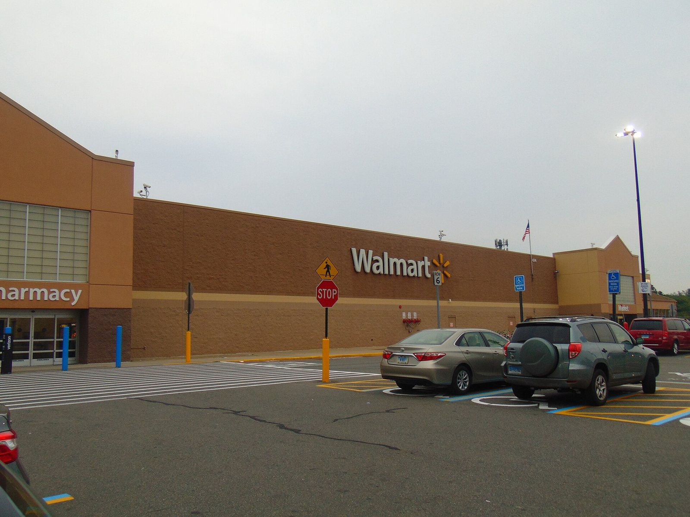

Il Campanello d'Allarme: le Vendite al Dettaglio Calano dello 0,6%
Il dato che ha acceso i riflettori su questa settimana è arrivato la scorsa settimana: a luglio le vendite al dettaglio (retail — commercio al dettaglio) negli Stati Uniti sono scese dello 0,6% rispetto al mese precedente. È il primo calo mensile in nove mesi, e un risultato molto più debole di quanto gli analisti si aspettassero. Nel dettaglio, i consumatori americani stanno rimandando le spese più importanti legate alla casa — cucine, bagni, ristrutturazioni — segno di una maggiore cautela quando si tratta di impegni economici pesanti e spesso finanziati a debito.
Da solo, un dato mensile non fa una tendenza. Ma arriva alla vigilia di tre trimestrali che, messe insieme, offrono la fotografia più completa dell'anno sullo stato del consumatore americano: da chi spende per la casa a chi fa la spesa di tutti i giorni.
💡 Impara: Cosa Sono le Vendite al Dettaglio e Perché Contano
Le vendite al dettaglio (retail sales) misurano quanto spendono i consumatori in negozi, supermercati, concessionarie e piattaforme online in un dato mese. Sono uno degli indicatori macro (macroeconomici) più seguiti perché i consumi privati rappresentano circa i due terzi del PIL (Prodotto Interno Lordo) statunitense: se i consumatori rallentano la spesa, l'intera economia ne risente. Un dato debole come quello di luglio spinge investitori e Federal Reserve a chiedersi se si tratti di un episodio isolato o dell'inizio di un raffreddamento più ampio dei consumi.
Tre Aziende, Tre Termometri Diversi del Consumatore
La ragione per cui questa settimana conta così tanto è che Home Depot, Target e Walmart non fotografano lo stesso tipo di spesa. Ognuna delle tre è un termometro diverso, puntato su una fascia diversa del consumatore americano.
| Azienda | Cosa misura | Cosa ci dice questa settimana |
|---|---|---|
| Home Depot | Spesa per la casa: ristrutturazioni, cucine, bagni. Voce costosa e spesso finanziata a debito. | Molto sensibile ai tassi d'interesse alti: mostra se i consumatori rimandano i grandi progetti domestici. |
| Target | Spesa discrezionale (discretionary spending — spesa non essenziale, di scelta e non di necessità). | Dà una lettura pulita della fiducia del consumatore: si spende di più quando ci si sente sicuri. |
| Walmart | Alimentari e beni di convenienza, spesa quotidiana e necessaria. | Mostra come stanno tenendo i consumatori a reddito più basso, i più esposti a un rallentamento. |
In pratica, guardando le tre trimestrali insieme è possibile capire non solo se il consumatore americano sta rallentando, ma dove: se il freno riguarda solo le spese costose e rimandabili (Home Depot) o si estende anche alla spesa quotidiana delle famiglie a reddito più basso (Walmart), il segnale per l'economia sarebbe molto più serio.
Il Calendario della Settimana e le Attese degli Analisti
Ecco le date e le stime principali diffuse dagli analisti prima delle pubblicazioni.
| Azienda | Data pubblicazione | EPS atteso | Ricavi / altre attese |
|---|---|---|---|
| Home Depot | Martedì 18 agosto, prima dell'apertura | $4,73 (vs $4,68 un anno fa) | — |
| Target | Mercoledì 19 agosto, prima dell'apertura | ~$2,25 (+9,8% annuo) | Ricavi attesi $26,1 mld (+3,4% annuo) |
| Walmart | Giovedì 20 agosto | — | Oppenheimer ha tagliato il giudizio a "Perform" (neutrale): comps (same-store sales — vendite a parità di negozi) attesi intorno al 3% contro il 3,8% del consenso, con rallentamento nelle categorie merce generica e salute/benessere. |
L'EPS (Earnings Per Share — utile per azione) è la misura più seguita in ogni trimestrale: indica quanto profitto l'azienda genera per ogni singola azione in circolazione. Ma altrettanto importante, specie per il retail, è la guidance (previsioni aziendali) che le società offrono per i mesi successivi: è lì che si capisce se i vertici aziendali vedono il consumatore rallentare ulteriormente o tenere.
⚠️ Nota importante
Questo articolo ha finalità esclusivamente informative ed educative. I dati riportati sono attese e stime di mercato pubblicate da analisti prima delle trimestrali, non previsioni di Alma Finanza, e possono discostarsi anche significativamente dai risultati reali. Nulla in questo articolo costituisce un consiglio d'investimento o una raccomandazione ad acquistare o vendere alcuno strumento finanziario.
Perché Conta per la Fed: Consumi Deboli e Tassi Alti
Il legame tra queste trimestrali e la politica monetaria della Fed non è immediato, ma è cruciale. La Federal Reserve fissa i tassi d'interesse (Fed Funds Rate — il tasso di riferimento della Banca Centrale USA) guardando a due obiettivi: contenere l'inflazione e sostenere l'occupazione. Consumi in rallentamento, come suggerisce il calo dello 0,6% di luglio, sono un segnale che l'economia sta già rispondendo ai tassi alti mantenuti fin qui — un raffreddamento della domanda che, in teoria, aiuta a tenere sotto controllo i prezzi.
Se le trimestrali di questa settimana confermassero un consumatore in difficoltà su più fronti — non solo sulla casa (Home Depot), ma anche sulla spesa quotidiana (Walmart) — il segnale rafforzerebbe l'idea che l'economia americana stia rallentando più di quanto i tassi attuali giustifichino. Al contrario, risultati solidi indicherebbero un consumatore ancora resiliente, che tollera bene i tassi alti attuali. È proprio su questo equilibrio — tra freno ai consumi e rischio inflazione — che la Fed dovrà decidere le prossime mosse, a partire dalla riunione del FOMC (Federal Open Market Committee — il comitato della Fed che decide sui tassi) del 16 settembre.
Jackson Hole, il Vero Appuntamento: il Foglio Bianco di Warsh
Se le trimestrali retail sono l'antipasto, il piatto principale delle prossime settimane è il simposio di Jackson Hole, in programma dal 27 al 29 agosto 2026 nel Wyoming, organizzato dalla Federal Reserve Bank di Kansas City. Il tema di quest'anno è "innovazione finanziaria e implicazioni per pagamenti e politica monetaria". Ma l'attenzione dei mercati sarà tutta sul discorso di venerdì 28 agosto: il primo intervento da presidente della Fed di Kevin Warsh.
Lo stesso Warsh, in un intervento del 29 luglio, ha descritto il discorso come "un foglio bianco", spiegando di non aver ancora deciso se usarlo per un intervento ampio sulla visione di politica monetaria oppure per preparare più nel dettaglio le mosse d'autunno. Ha però chiarito un punto: la Fed agirà indipendentemente da ciò che i mercati stanno prezzando in questo momento.
Ed è qui il dato che sorprende di più: il mercato prezza circa il 39% di probabilità di un rialzo dei tassi alla riunione di settembre — non di un taglio. La decisione FOMC arriva il 16 settembre, diciannove giorni dopo Jackson Hole, con due letture sui prezzi al consumo nel mezzo. Le trimestrali retail di questa settimana, insieme a quei dati sull'inflazione, saranno parte degli elementi che il nuovo presidente della Fed avrà sul tavolo prima di parlare.
💡 Impara: Cos'è Jackson Hole e Perché il Mercato Prezza un Rialzo
Jackson Hole è il simposio economico più seguito dell'anno dai mercati finanziari: banchieri centrali di tutto il mondo si riuniscono per discutere politica monetaria, e il discorso del presidente della Fed viene analizzato parola per parola per capire la direzione futura dei tassi. Che il mercato prezzi una probabilità di rialzo (e non di taglio) è una situazione insolita rispetto agli ultimi anni: riflette l'incertezza su quanto l'inflazione sia davvero sotto controllo e su come reagirà un presidente Fed che, per sua stessa ammissione, non ha ancora deciso la linea da tenere.
Il contesto di mercato in cui arriva tutto questo è, per ora, relativamente sereno: l'S&P 500 (il principale indice azionario americano) ha chiuso venerdì 14 agosto la sua terza settimana consecutiva di rialzo, e la seduta di lunedì 17 agosto si è mostrata interlocutoria, con l'indice praticamente invariato (+0,04%), il Dow Jones in lieve calo (−0,25%) e il Nasdaq in leggero rialzo (+0,23%), a mercati ancora aperti. È in questo clima di relativa calma che si inseriscono le trimestrali retail e, tra due settimane, Jackson Hole: due appuntamenti capaci di cambiare la narrazione se le sorprese, positive o negative, dovessero essere marcate.
In sintesi: questa settimana non offrirà risposte definitive sulla direzione dell'economia americana, ma darà i tasselli più aggiornati per capire come sta davvero il consumatore statunitense — prima che, a fine mese, sia la Fed a doverne trarre le conseguenze.